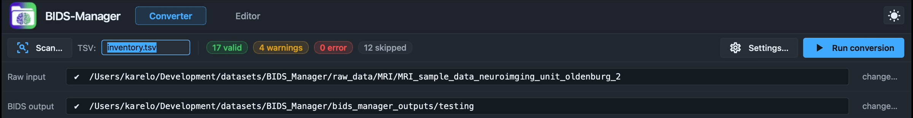

Primary walkthrough.
Small Siemens MRI dataset with T1w, T2w, BOLD, DWI, fmap, and physio. The cleanest end-to-end example, and the one the GUI walkthrough below uses.
One end-to-end walkthrough. You'll watch the GUI step through scanning, curating, converting, enriching and validating a real MRI dataset, then see the same four stages run from the command line. Step at your own pace, or download one of the four sample datasets and follow along on your own machine.
Other DICOM-to-BIDS tools require you to declare up front how each series should be classified. BIDS Manager scans the raw data first and shows you what is actually inside the folders. Every series, every entity guess, every confidence score. The interactive table you edit is the same one the converter consumes, so what you see is what gets written.
BIDS Manager runs in eight stages, alternating user-driven and engine-driven steps. Every step below mirrors what BIDS Manager does on disk, using the same engine the CLI exposes. The full interactive diagram lives on the intro page.
The walkthrough below uses the primary MRI dataset (Oldenburg neuroimaging unit). Pick any of the four to download and follow along. Each More info link opens a page with the dataset tree, real CLI numbers, and modality-specific quirks.
Small Siemens MRI dataset with T1w, T2w, BOLD, DWI, fmap, and physio. The cleanest end-to-end example, and the one the GUI walkthrough below uses.
Showcases the task-name override scene: filenames carry only an opaque run token (S001R01...). The user assigns the real protocol task names in the interactive table before any conversion runs.
Shows automatic session inference from date-named folders. Tasks parse cleanly (driving, rest, empty-room). Demonstrates the MEG conversion path through mne-bids.
The deep dive. T1w / T2w / T2starw / FLAIR anatomicals, BOLD plus SBRef, DWI with FA / colFA / trace / TENSOR derivatives, fmap pairs, Siemens CMRR physio.
Six steps using the primary MRI dataset (Oldenburg neuroimaging unit: 3 folders, 2 BIDS subjects). Use the dots or the prev / next buttons to step through. For the full dataset detail (tree, real CLI numbers, quirks) see the MRI 1 info page.
The example below uses the primary MRI dataset because
it exercises every datatype (anat, func, dwi, fmap,
physio) in a single small folder, but
the six steps below are identical for EEG and MEG
data. Only the per-row backend swaps:
dcm2niix for DICOM rows,
mne-bids for EDF / FIF / BDF
/ BrainVision / CTF, and
bidsphysio for Siemens CMRR
physio. The Scan -> Inspect -> Convert -> Editor flow
you see here is what you do on every supported modality.
For modality-specific quirks (session inference from
date-named folders, task name overrides in EDF, DWI
derivative detection, etc.), see the
EEG,
MEG, or
MRI advanced
info pages.
The Converter's first ask is two paths. Raw input points to the folder that holds your DICOM dump (one subfolder per scanning session). BIDS output is where the final dataset will land. The little glyph at the left of each path bar flips from a circle to a check once the folder exists.
The Scan button stays disabled until both paths are valid. Run conversion stays disabled until a scan finishes. The rest of the GUI is read-only until the user picks both folders.
The Scan… button kicks off an inventory
walker. The walker reads every DICOM under the raw
input, clusters folders into BIDS subjects by their
PatientID tag, groups
files into series by their
SeriesInstanceUID, and
stamps each series with a
bids_guess_* entity tuple
plus a confidence score.
The spinner tells you the engine is busy. The status text streams the active stage. The four chips (valid / warnings / error / skipped) tick to their final counts once the walker finishes.
The recording below captures the live state during a scan on the primary MRI sample. The status text streams the engine's stage (walking the folder, reading DICOM headers, clustering subjects). The chips tween to their final counts once the walker finishes: 17 valid / 4 warnings / 0 error / 12 skipped (21 keepers + 12 auto-skipped = 33 inventory rows).
Three of the four chips are clickable: warnings, error, and skipped. Clicking one opens an IssuesDialog listing every row that triggered that severity, with a one-click jump → link back to the Inspection table. The valid chip is passive (no dialog) because clean rows do not have findings worth surfacing.

fmap/fmap/fmap/fmap/epi:
SeriesDescription contains a B0 marker and
file count is much smaller than the longest
DWI peer in this session (likely a PEpolar
reference for distortion correction; user
may re-route to dwi/_dwi
if it is a real b=0 DWI run)Once the scan finishes the Converter view fills with four panes that share the same model. This step is a guided tour through each pane and the relationships between them. Step through the 5 sub-steps with the stepper below; the mock window stays in place and shifts focus to the pane being explained.
The Inspection table is the centre of gravity, but every row is also reachable through the Filter pane (schema-grouped tree on the left), the Raw FS tree (file-system reality), the Output FS tree (the future BIDS layout), and the Properties panel (the entity editor on the right). Whatever you edit anywhere updates everywhere.
The centre of gravity. One row per series the
scanner found, with the schema-driven classifier's
best guess for datatype, suffix, task, run, and
the resulting BIDS basename. The
sequence / source
column carries the raw scanner label so you can
cross-check what each row actually is.
Click any row in the Inspection table. The Properties panel on the right reads that row and builds a schema-aware editor: only the entities valid for the row's (datatype, suffix) appear; required ones carry a red asterisk; the Predicted path at the bottom updates as you type.
Click any cell in the Inspection table or the
Properties panel; both write through the same
model. Here we retype the
task entity of the
selected row from
rest to
motor. The table cell,
the Properties field, and the predicted-path
preview all update in step.
Shift- or Cmd-click to multi-select rows in the
Inspection table, then click Bulk edit in
the table footer. A small dialog overlays the
table; pick a column and type a value; Apply writes
that value to every selected row in one move. Here
we relabel five sub-001 /
ses-pre rows from
pre to
baseline in one click.
The dataset shape view: every series grouped by
subject / session / datatype with tri-state
checkboxes. Uncheck
sub-001 / ses-pre / fmap
and the matching rows in the Inspection table
immediately deselect (their row checkboxes flip
off). The rows stay visible for review, but the
next conversion run will skip them. The filter is
the schema-grouped view; the Inspection table is
the per-row view of the same model.
| id | data | suffix | task | run | conf | sequence / source | predicted basename | ||
|---|---|---|---|---|---|---|---|---|---|
| ✓ | sub-001 | anat | T1w | — | — | 0.85 | ses-pre_T1w | sub-001_ses-pre_acq-tfl3p2_T1w |
|
| ✓ | sub-001 | func | bold | rest | — | 0.40 | ses-pre_task-rest_bold | sub-001_ses-pre_task-rest_bold |
|
| ✓ | sub-001 | func | bold | sparse | — | 0.40 | ses-pre_task-sparse_bold | sub-001_ses-pre_task-sparse_bold |
|
| ✓ | sub-001 | fmap | magnitude1 | — | 1 | 0.85 | ses-pre_run-01_fmap | sub-001_ses-pre_acq-fm2_run-1_magnitude1 |
|
| ✓ | sub-001 | fmap | magnitude1 | — | 2 | 0.85 | ses-pre_run-02_fmap | sub-001_ses-pre_acq-fm2_run-2_magnitude1 |
|
| ✓ | sub-001 | func | bold | mb | — | 0.40 | ses-post_task-mb_bold | sub-001_ses-post_task-mb_bold |
|
| ✓ | sub-001 | func | physio | mb | — | 0.40 | ses-post_task-mb_bold_PhysioLog | sub-001_ses-post_task-mb_physio |
|
| ✓ | sub-002 | anat | T2w | — | — | 0.40 | acq-space_T2w | sub-002_acq-space_T2w |
|
| ✓ | sub-002 | dwi | dwi | — | — | 0.85 | acq-15_dir-ap_dwi | sub-002_acq-epse2_dir-AP_dwi |
|
| ✓ | sub-002 | fmap | epi | — | — | 0.85 | acq-15b0_dir-ap_dwi | sub-002_acq-epse2_dir-AP_epi (rerouted) |
|
| ✓ | sub-002 | func | bold | dmaging | 1 | 0.40 | task-dmaging_run-01_bold | sub-002_task-dmaging_run-1_bold |
|
| ✓ | sub-002 | func | bold | uebung | — | 0.40 | task-uebung_bold | sub-002_task-uebung_bold |
|
| sub-001 | — | localizer | — | — | — | AAHead_Scout_64ch-head-coil_MPR_cor | (skipped) | ||
| sub-001 | — | reports | — | — | — | PhoenixZIPReport | (skipped) |
Classifier: dcm2niix BidsGuess plus sequence-dict fallback.
Confidence: 0.40 (medium). Operator should review the task name.
Click Run conversion. The toolbar's
BusySpinner kicks in, the Run button flips to
Cancel, and the Log dock streams every engine
line. BIDS Manager stages each subject in a private
temp tree (.tmp_bidsmgr/sub-XXX/),
runs the right backend per row
(dcm2niix for MRI,
vendored bidsphysio for
Siemens physio logs), stitches the cross-file
fixups (fmap rename, IntendedFor arrays,
scans.tsv), then atomically renames each
staged subject into the BIDS root. Once that is
done the metadata enrichment engine
runs automatically, filling every sidecar field the
schema can infer from the inventory.
The mock below intentionally drops the panes and the path bars; the only live signals during a real conversion are the toolbar spinner and the Log tab. Each line is colour-coded by stage: stage (purple) is per-row backend output, fixup (teal) is cross-file metadata repair, done (green) marks a committed subject, and enrich (pink) is the post-conversion metadata pass.
Watch for the enrich
log lines after the last committed sub-XXX
line. The metadata engine reads every sidecar the
backends just wrote, fills the required fields it
can infer from inventory rows or the BIDS schema
(10 fields filled on this dataset), and leaves a
metadata_report.json
audit log in .bidsmgr/.
The 7 TODOs that remain are recommended-only
fields (License, TaskDescription, etc.) that
need a human in the Editor.
Switch to the Editor view to read the freshly converted BIDS root: navigate the dataset tree, open any file in the extension-routed viewer, edit sidecars in a schema-aware form, and validate at file / folder / dataset scope. The 3-column layout stays in place across the walkthrough; the centre pane swaps content by file extension and the validation pane on the right reflows when audits run.
The BIDS tree, the centre viewer, and the validation pane share the same underlying file model. Edit a sidecar in the centre pane → the BIDS tree's status dot updates → the validation pane re-reads the file. Click an issue in the validation pane → the tree expands and the centre pane jumps to the offending file.
Click Open BIDS root, pick the dataset, and the 3-column layout fills: the BIDS tree on the left, the schema-aware sidecar form in the centre, and the validation pane on the right showing a hint ("Run 'Validate dataset' to populate this column."). The toolbar chips read 0 ok / 0 warn / 0 err until you actually run a validation.
The Editor runs the two-layer validator over the BIDS root. The chips tween to their final counts (55 ok / 7 warn / 0 err on this dataset), the right pane drops the hint and prints grouped results (dataset-level, folder-level, per-file), the BIDS tree's status dots flip, and the sidecar form picks up a red mark next to any field that fails.
The warn and err chips are clickable. Clicking the warnings chip opens a modal that lists every file with at least one warning, grouped by file path, with the rule code and message for each. The jump → button on each group selects that file in the BIDS tree; the Set a real value chip on each row marks the offending sidecar field for review.
Switch to Tree view to see the raw key / value tree. The button bar above the form grows: + Add field creates a top-level key, + Add subfield nests inside the selected array / object, - Delete field removes the selected entry, Revert drops pending edits, Save writes to disk. The coloured legend on the right is the same required / recommended / optional / deprecated palette the BIDS view uses.
Click any TSV in the BIDS tree
(participants.tsv,
scans.tsv,
channels.tsv,
electrodes.tsv) to
open it as an editable table. The button bar above
the table is symmetrical to the sidecar editor's:
+ Add row, - Delete row,
+ Add column, - Delete column,
Revert, Save. Click any cell to
edit; Enter commits.
| participant_id | age | sex | given_name | family_name | patient_id | |
|---|---|---|---|---|---|---|
| 1 | sub-001 | 020Y | M | XX00XX00 | OL_0002 | OL_0002 |
| 2 | sub-002 | 020Y | M | XX00XX22 | OL_0003 | OL_0003 |
Run Validate dataset to populate this column.
field 'Instructions' contains TODO placeholder
field 'TaskDescription' contains TODO placeholder
field 'CogAtlasID' contains TODO placeholder
field 'CogPOID' contains TODO placeholder
Click a .nii.gz in the
BIDS tree and the centre pane swaps to the volume
viewer: sagittal, coronal, axial, sharing one
crosshair. The toolbar across the top lets you
focus on one plane or stay in tri-view; for 4-D
BOLDs there's also a Graph tab with the
per-voxel time series across volumes.
The BIDS tree, the validation panel, and the
Editor toolbar are unchanged from Scene 7. Only
the centre pane is different, because the
Editor routes the open file by extension:
.json -> sidecar
form, .tsv ->
editable table, .nii.gz
-> tri-view. Swap files in the tree and the
centre re-routes on the fly.


BIDS Manager ships five console scripts plus the GUI entry.
Every verb accepts -v for INFO
logging and -vv for DEBUG;
documented inline only for the verbs where it changes
behavior. Synopses below mirror what --help
prints on a fresh install of bids-manager
on PyPI.
bidsmgr-scan
Walks a raw input folder, reads metadata from inside every
file (DICOM tags, EDF / FIF headers), classifies each
series with the schema-driven chain, and writes a single
inventory TSV with one row per series + an
entities JSON column carrying
the BidsGuess. Re-runnable, diff-able, openable in any
spreadsheet tool.
bidsmgr-scan <dicom_root> <output_tsv> [options]
dicom_rootoutput_tsv--jobs N, -j N--dataset NAMEdataset column. The converter
writes each distinct value to its own
<bids_parent>/<dataset>/
tree. Defaults to a slugified form of the raw root's
folder name.--probe-convertdcm2niix as a probe on every
DICOM series (one invocation per
SeriesInstanceUID) into a
hidden <output_tsv_parent>/.tmp/
staging tree, harvest what was produced, then remove the
staging tree. Adds
probe_n_files /
probe_n_nifti /
probe_n_volumes /
probe_extensions columns to
the TSV and surfaces conversion anomalies (e.g. a BOLD
series that split into two NIfTIs because of an
operator-aborted volume) in
proposed_issues. Slow but
most accurate; recommended for first scans.--no-bids-guess--line-freq HZline_freq
column. Goes into
PowerLineFrequency in the JSON
sidecar (BIDS-required). Typical values: 50 (Europe /
most of the world), 60 (Americas / parts of Asia). Per-row
TSV value wins over this.--montage NAMEstandard_1005,
biosemi64,
easycap-M1) stamped into
every EEG / MEG row's montage
column. The converter applies it before
write_raw_bids, which fills
electrodes.tsv +
coordsystem.json. Per-row TSV
value wins.bidsmgr-rebuild
Reconciles the inventory TSV's
entities JSON column with its
derived display cells
(proposed_basename,
session,
task,
run). The entities column is
the source of truth for the BIDS basename;
bidsmgr-convert runs this
automatically in memory before reading rows, so manual
calls are mostly for diff-style preview.
bidsmgr-rebuild <tsv> [options]
tsvbidsmgr-scan.--from {entities,columns}entities regenerates the
display cells from the entities JSON. Pass
columns to do the reverse:
regenerate the entities JSON from individual cells (use
after editing task / run / session cells in a
spreadsheet).--dry-runbidsmgr-convert
Reads the inventory and converts every keeper row to BIDS
using the right backend per modality
(dcm2niix for DICOM,
mne-bids for EEG / MEG / iEEG,
bidsphysio for Siemens CMRR
physio). Stages each subject under a private
.tmp_bidsmgr/sub-XXX/ tree,
then atomic-renames into the BIDS root on success. Each
distinct dataset value in the
TSV becomes its own BIDS root under
<bids_parent>/.
bidsmgr-convert <tsv> <bids_parent> [options]
tsvbidsmgr-scan.bids_parentdataset value in the TSV
becomes a sibling BIDS root underneath.--dataset NAMEdataset cell equals this
value. Useful for re-running a single dataset out of a
multi-dataset inventory.--jobs N, -j N--overwritesub-<id>/ folders. Their
previous contents are moved to
<bids_root>/.bidsmgr/backup/
before the new tree lands. Without this flag, an
existing subject folder is left alone and a warning is
logged.--dry-run--raw-root PATHsource_file paths. If omitted,
the TSV's parent directory is tried (the GUI's default
puts the TSV inside the raw root, so this is usually
unnecessary).--dcm2niix PATHdcm2niix binary. Defaults to
the one bundled with the
bids-manager wheel.--line-freq HZ50; use
60 in the Americas / parts of
Asia. Pass 0 to leave unset
and let the recording's own value apply.--montage NAMEelectrodes.tsv +
coordsystem.json. Use only if
all rows share the same channel layout; otherwise edit the
inventory's per-row montage
column instead.bidsmgr-metadata
Post-conversion metadata engine. Walks a BIDS root and
fills every required field the schema can infer
(Manufacturer, MagneticFieldStrength, EchoTime,
RepetitionTime, etc.) from the converted files and / or the
inventory TSV. Writes
dataset_description.json,
enriches every sidecar, and leaves a
metadata_report.json audit log
under .bidsmgr/.
bidsmgr-metadata <target> [options]
targetbidsmgr-convert writes into).
Every BIDS root underneath is processed in turn unless
--dataset narrows it.--dataset NAMEtarget is a parent,
limit the run to this single dataset name.--inventory-tsv PATHbidsmgr-scan. Used to enrich
participants.tsv with
demographics (PatientAge, PatientSex). Without it those
columns default to n/a.--fill-todosdataset_description.json),
write the literal string "TODO"
as the value. Existing values are never overwritten.
Lets you sweep through the BIDS root and fill the
placeholders by hand later in the Editor.--name NAMEdataset_description.json.
Defaults to the BIDS root directory name.--bids-version VERSIONdataset_description.json.
Default 1.10.0.--license TEXTdataset_description.json.--author NAME--acknowledgements TEXT--how-to-acknowledge TEXT--funding TEXT--ethics-approvals TEXT--references-and-links TEXT--dataset-doi DOIDatasetDOI.--no-report<bids_root>/.bidsmgr/metadata_report.json.
By default the JSON report is always written so the GUI
and CI tooling can pick it up after the run.bidsmgr-validate
Two-layer validator. Layer 1 (always) is the
schema-driven audit: per-file sidecar checks against
bidsschematools 1.2.2 plus the
BIDS Manager-specific rules (TODO placeholders, IntendedFor
consistency, fmap pair completeness). Layer 2 (opt-in via
--strict) adds the official
bidsschematools structural pass.
bidsmgr-validate <target> [options]
targetbidsmgr-metadata's shape.--dataset NAMEtarget is a parent,
limit to this single dataset name.--strictbidsschematools structural
validation. Adds path-shape checks against the BIDS spec
and is slower on large trees.--strict-warn1 only when there is at least
one error; with this flag, any warning also fails the
run.--html<bids_root>/.bidsmgr/validation_report.html.
Inline CSS, no external assets, safe to share or
archive. Issues are colour-coded green / amber / red and
grouped by scope (dataset / folder / file).--no-report<bids_root>/.bidsmgr/validation_report.json.bidsmgr (GUI)Launches the desktop GUI. The Converter and Editor views drive the same engine the CLI exposes, so anything you can do here can be scripted.
bidsmgr [options]
--theme {dark,light}dark on first run).--project PATH.bidsmgr.bidsmgr project bundle.
Every edit the user makes in the GUI appends to its
event log; the bundle persists overrides + inventory +
decisions across sessions.
The canonical source for every flag is
--help on each verb. If a flag
here ever drifts out of date, the argparse definitions in
the
repository
are authoritative.
The GUI you just walked is a window onto the same engine you can drive from a script. Four console scripts run the same scan, convert, enrich, validate sequence. Numbers below come from the primary MRI dataset (33 inventory rows; 12 auto-skipped; 21 keepers).
Walks the input tree, reads metadata from inside every file
(DICOM tags, EDF headers, FIF info), runs the schema-driven
classifier on every row, and writes a single inventory TSV
you can spreadsheet-edit before any conversion runs.
--probe-convert runs one
dcm2niix probe per series so
the inventory carries the same BidsGuess the converter
will see.
# Walk raw_root, write inventory.tsv with one row per series. bidsmgr-scan <raw_root> <inventory.tsv> --probe-convert -j 4 # 33 rows, 12 pre-marked bids_guess_skip=true (scouts, Phoenix reports). # Takes ~25 s on the primary MRI dataset on a Mac.
Reads the inventory, dispatches each row to the right
backend per modality (dcm2niix
for MRI, mne-bids for EEG /
MEG, bidsphysio for Siemens
CMRR physio), stages per subject under
.tmp_bidsmgr/, then commits
atomically.
# Convert inventory.tsv into bids_parent/. Same engine the GUI uses. bidsmgr-convert <inventory.tsv> <bids_parent> --raw-root <raw_root> -j 4 # Writes 21 NIfTI files + sidecar JSONs + events / channels TSVs. # Per-subject staging, atomic os.rename on success.
Runs the post-conversion metadata engine. Walks the freshly
written BIDS tree and fills every required field the schema
can infer (Manufacturer, MagneticFieldStrength, EchoTime,
RepetitionTime, etc.) directly from the converted files.
Whatever the engine cannot infer is stamped with
"TODO" for you to fill in the
Editor.
# Auto-enrich sidecars; replace fillable TODOs where possible. bidsmgr-metadata <bids_root> --fill-todos # Fills dataset_description.json + every sidecar's required schema fields. # 5 TODO placeholders remain on this dataset (License, Authors, Instructions, TaskDescription).
Two-layer validator: structural rules (filename grammar,
required files) plus per-file schema checks against
bidsschematools 1.2.2. Prints
a severity-coloured summary; the same checks power the
Editor's validation pane.
# Validate the BIDS dataset; emit HTML report with --html. bidsmgr-validate <bids_root> # Primary MRI dataset result: 55 ok / 7 warn / 0 err. # All 7 warnings are bidsmgr.todo_placeholder (fillable in the Editor in one pass).
The GUI runs the same engine. Use whichever interface fits the task: visual review for one-off datasets, scripts for cohort runs. Full CLI surface (every flag, every verb) is documented in the repository README.